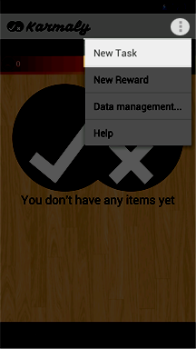
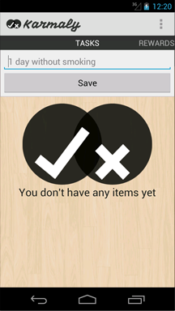
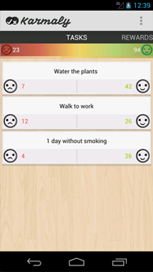
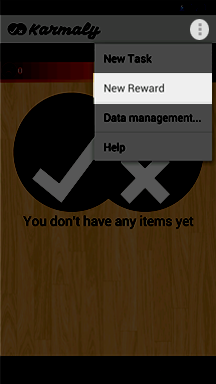
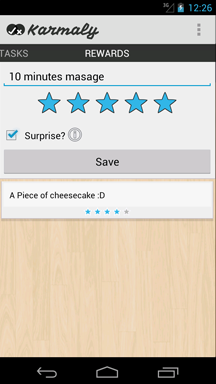
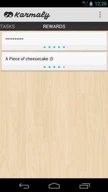
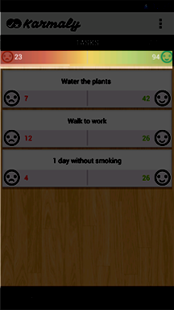
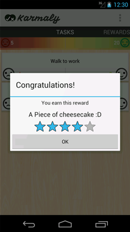

Karmaly v1.0. Instructions
English | Español
What is Kamarly?
Karmaly is the best way to track your task or goals and achieve rewards. With Karmaly you can accomplish tasks and turn it to an habit.
What can I do with Karmaly?
- Create tasks/goals



- Create rewards



- Track the task and Receive rewards


- Data management
- Delete tasks: All the tasks will be deleted, but the reward points will still count
- Delete rewards: The rewards and the hidden ones will be deleted.
- Delete user data: All the reward ,done and no-done points will be set to 0
Problems
I don't earn points.
Make sure the no-done points are less than 1/3 of the done points, for add a reward point.
Another problem?
I'm sorry :(, Karmaly it's just growing if you find a bug or have a sugest, feel free to email at : coffeearmydev@gmail.com
=================================================
Karmaly v1.0. Instrucciones
English | Español
¿Qué es Karmaly?
Karmaly es la mejor forma de conseguir tus objetivos y recibir recompensas a cambio.
¿Qué puedo hacer con Karmaly?
- Crear tareas/objetivos
- Crear recompensas
- Seguir proceso de una tarea y recibir regalos
- Gestión de los datos.
- Borrar tareas: Todas las tareas serán borradas, pero la puntuación seguirá teniendose en cuenta
- Borrar recompensas: Todas las recompensas serán borradas, incluso las ocultas.
- Borrar datos de usuario: la puntuaciones de recompensa, tareas hechas y no hechas serán puestas a 0
¿Problemas?
No gano puntos de recompensa.
El sistema no otorga puntos de recompensa si la puntuación negativa de la tarea es mayor que un tercio de los puntos positivos de la tarea.
¿Otro problema?
Lo sentimos mucho :(, Karmaly esta creciendo y en desarrollo, si encuentras algún problema o fallo o tienes una sugerencia, mándanos un email a : coffeearmydev@gmail.com